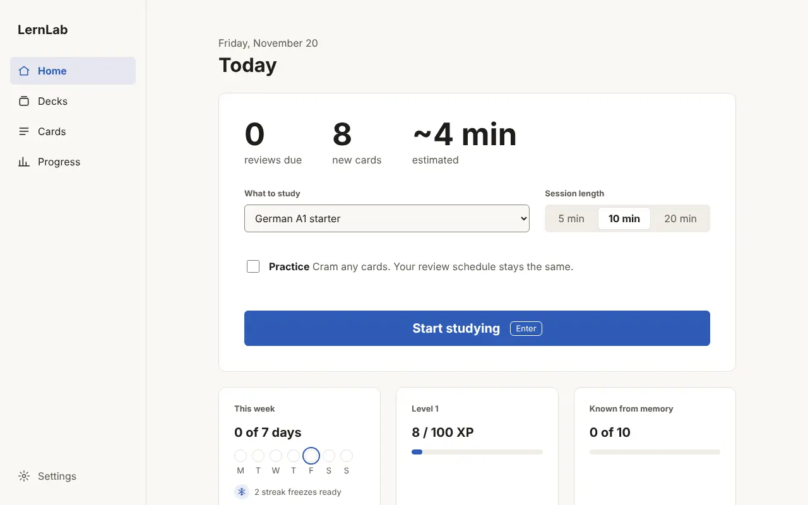
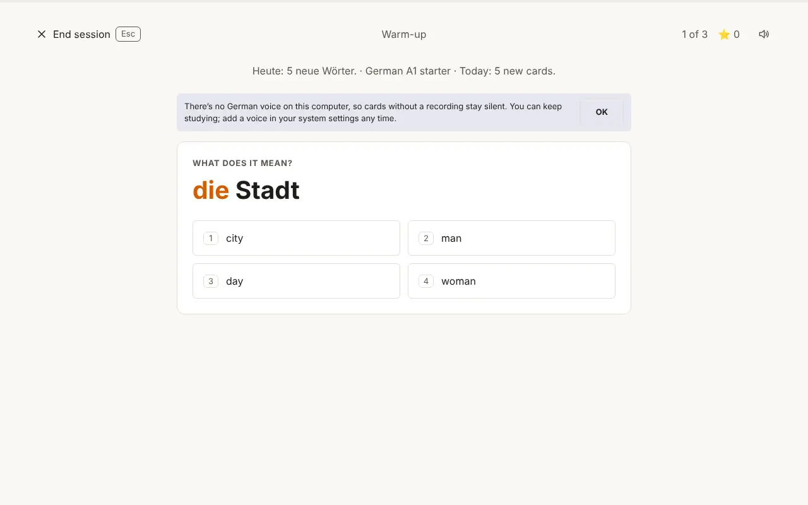
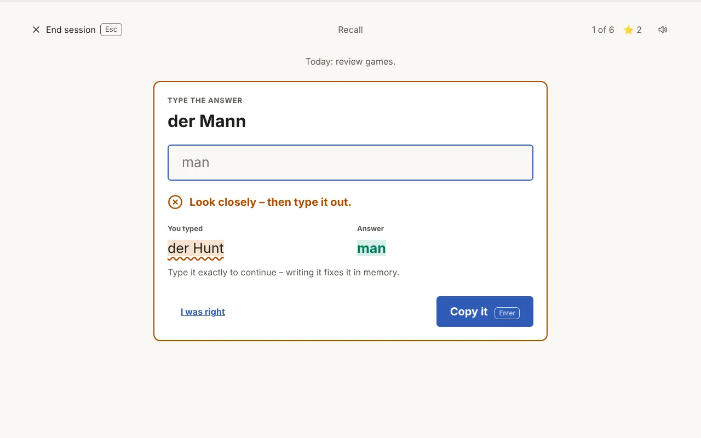
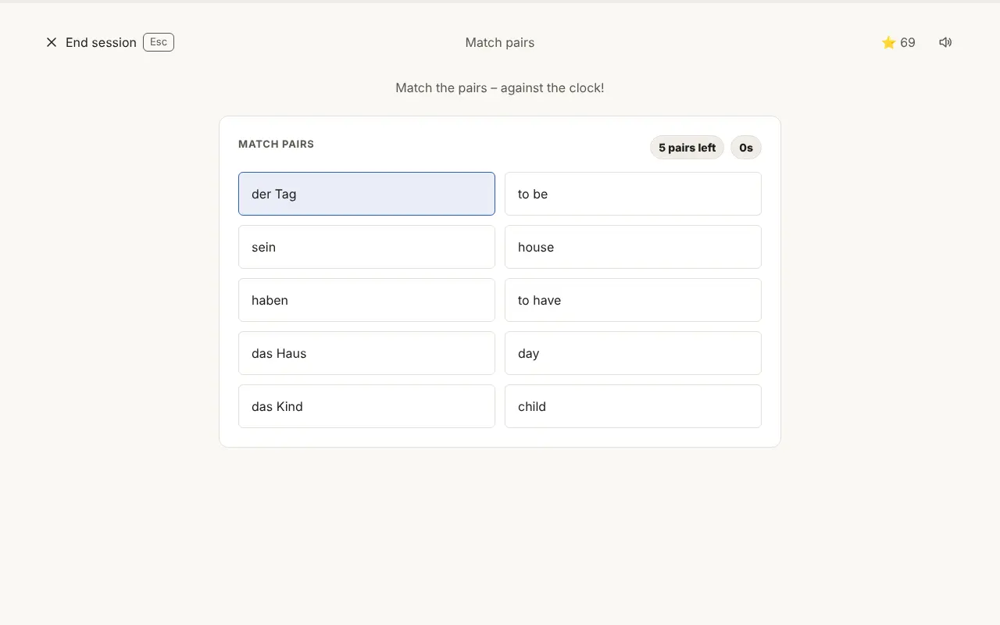
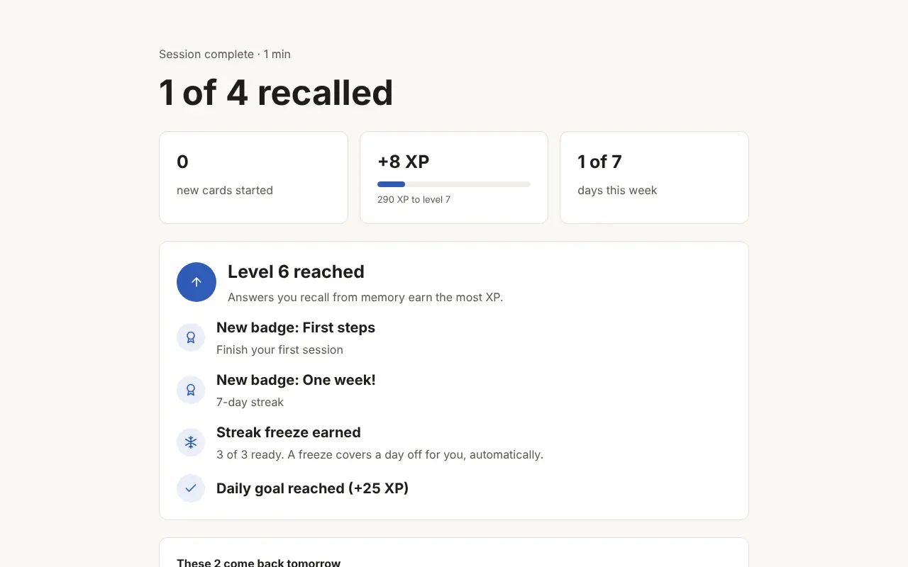
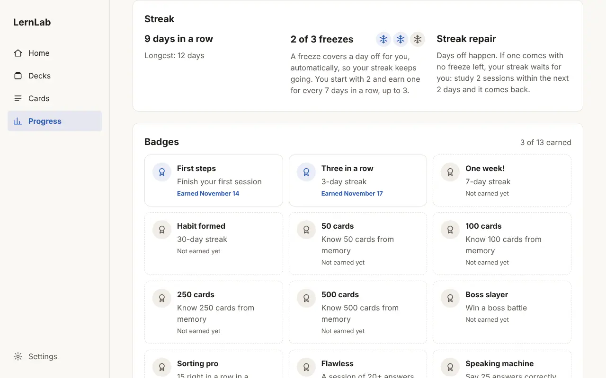

Flashcards that feel like a game.
LernLab is a free study app for any subject: languages, medicine, law, cloud certificates, history. It turns your cards into short, varied rounds, with spaced repetition underneath, on your own computer.
LernLab runs on computers. Open this page on your Windows, Mac or Linux computer to download it.
We couldn't tell which system you use. Pick your download below.
Made to help you remember
-
Short, varied rounds
A session is a run of 60–90-second blocks, and the format changes each time: multiple choice, typing, cloze, match pairs, word rain, listening, speaking and more. Pick 5, 10 or 20 minutes.
-
Honest grading
You type or say the answer, and LernLab grades it. It forgives capitals and small typos, and an “I was right” button is there when it's too strict.
-
Spaced repetition underneath
FSRS, the scheduler modern Anki uses, decides when each card comes back. Only real recall moves it: games never mark a card as known.
-
Forgiving, never nagging
Streak freezes, no guilt messages and no leaderboards. New cards are never timed, and a missed day is a gap, not a reset.
-
Brings your decks along
Import Anki
.apkgpackages, Quizlet-style CSV, pasted lists or live Anki. Export to CSV and.lernpackat any time. -
Easy to read and use
Large, clear type, light and dark themes, larger text when you want it, full keyboard use and screen reader support.
A look inside
The pictures follow your light or dark setting, like the app does.
-

Home: one button to start. -

One card at a time, nothing else on screen. -

Mistakes show what to fix, calmly. -

Quick games between recall rounds. -

Celebrations wait until the end. -

Progress, streaks and badges.
Private by design
Your decks and progress stay on your computer. Nobody watches how you study, not even us.
- No account. Download it, open it, study.
- No tracking and no analytics, in the app or on this website.
- No cookies. This page loads nothing from other sites.
- Online only when it must be: to check for updates, to open the deck gallery when you ask, and to use your own AI key if you add one.
Download LernLab
Version latest, free. Everything it needs is inside the installer (about 100 MB); you don't need anything else.
Windows
Windows 10 and 11
macOS
Not sure which Mac you have? Apple menu → About This Mac: “Chip” means Apple silicon, “Processor” means Intel.
Linux
64-bit Intel or AMD (x86-64)
lernlab_amd64.deb
The first time you open it
The installers aren't signed yet, so your system warns you once. LernLab is open source and built in public on GitHub.
- Windows: if SmartScreen says “Windows protected your PC”, choose More info → Run anyway.
- macOS: drag LernLab into Applications and open it. If macOS can't check it, go to System Settings → Privacy & Security and press Open Anyway.
- Linux: make the AppImage executable and run it, or install the .deb.